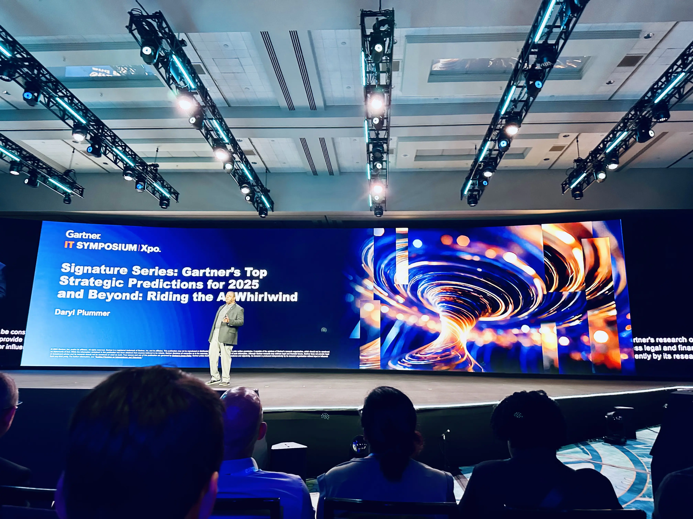
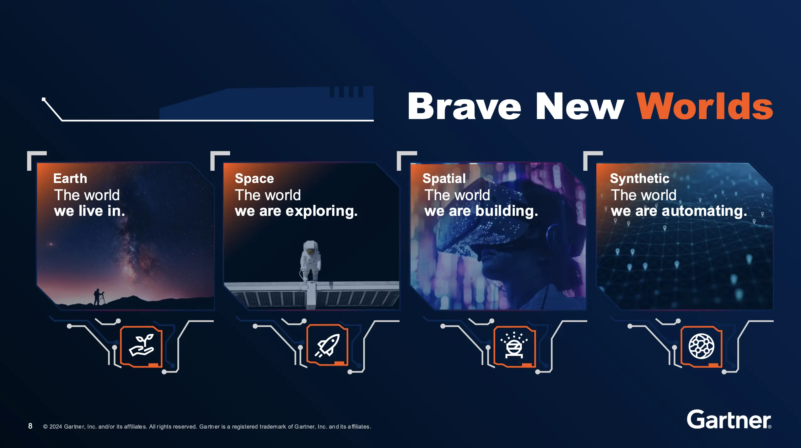

Gartner 2024 Day 2: Exploring AI, the Future, and the Human Experience
Today marked the second day of the Gartner Symposium, and I managed to sit through six insightful talks. AI was once again a central theme, with topics ranging from its practical applications to far-reaching futuristic visions. While I’m starting to feel a bit of AI overload, there were standout sessions that left me thinking about the potential of AI in ways I hadn’t considered before. My favorite talks were those that encouraged a vision of the future beyond today’s immediate AI implementations and into the realms of space, robots, and transforming our daily lives.
Here’s a quick recap of the sessions I attended:
- Interview with Jensen Huang
- Gartner’s Top Strategic Predictions for 2025 and Beyond: Riding the AI Whirlwind by Daryl Plummer
- Maverick Research: Being Human 2045 by Marty Resnick
- Executive Guide to AI Governance by Frances Karamouzis
- UiPath: Unlock the Power of AI in Your Business with Automation with Dottie Dunn, Timothy Kim
- The Future of AI: Less Talking, More Doing by Erick Brethenoux
While AI dominated the conversation, it was refreshing to hear broader visions of the future and a few key insights that connected AI to the human experience. Here are some of my takeaways from the day:
Interview with Jensen Huang: A Visionary Leader in AI Transformation
Jensen Huang’s interview was a standout. His advice to move from traditional CPU hardware to GPU-based solutions was compelling, not just for specialized tasks but for everyday computing, highlighting a 20x productivity boost. What struck me most was his emphasis on just getting started—embracing AI experimentation to drive transformation across industries. Huang’s vision of AI-driven digital workers collaborating alongside human teams was an inspiring take on how AI can reshape work.
Key Takeaways:
- Shift to GPUs: Accelerated computing using GPUs can deliver up to 20x productivity gains, even in general computing.
- Digital Workers: A future workforce will include AI agents that assist human employees, particularly in areas like customer service.
- AI for Business: AI isn’t just for external applications—use it to enhance internal processes like supply chain management and chip design.
- Leadership in AI: Leaders must embrace reinvention, pushing the boundaries of AI to stay relevant and future-proof their organizations.
Gartner’s Top Strategic Predictions for 2025 and Beyond: The AI Whirlwind

Daryl Plummer’s talk took a broader look at where AI is headed in the coming years. While there weren’t immediate takeaways for me to implement, it painted a fascinating picture of AI’s expanding influence across industries—from AI agents negotiating contracts to AI-driven healthcare systems detecting emotional states. The session made me think deeply about the ethical considerations of AI, particularly as it continues to blur the lines between human and machine.
Key Takeaways:
- AI in Contracts: AI is now capable of negotiating contracts, pointing to a future where even high-level business interactions are automated.
- Emotional AI in Healthcare: By 2027, emotional AI will play a critical role in detecting patients’ emotional states, potentially improving care.
- AI-Driven Flattening: By 2026, AI could eliminate up to 50% of middle management roles, flattening organizational structures.
Maverick Research: Being Human 2045

Marty Resnick’s session was my favorite of the day. While AI was part of the conversation, the talk expanded into imaginative realms of space travel, household robots, and the blending of digital and physical worlds. This was more of a visionary exploration than a prescriptive session, which I loved. It painted a hopeful, exciting future—one where AI and robotics could truly transform our lives. Space travel and autonomous systems are becoming more of a reality every year, and the potential for household robots to assist with daily chores is something we may see by 2045.
Key Takeaways:
- Household Robots: By 2040, 50% of households could have robots assisting with tasks like cleaning or cooking.
- Space Travel: By 2045, 20% of the population may afford annual space vacations, driven by decreasing space travel costs.
- Digital Personhood: AI avatars could gain legal rights by 2045, prompting fascinating debates on the future of digital personhood.
The Future of AI: Less Talking, More Doing
Erick Brethenoux took a refreshingly practical approach to AI in his talk. His focus was on simplifying and enhancing human lives, reminding us that AI’s goal should be to free us from tedious tasks, not create additional complexity. I particularly liked his emphasis on starting small—ask your employees what they dislike most about their jobs and see if AI can automate those tasks. This human-first, simplicity-driven approach is something I think is key as we move forward with AI. His comparison to Apple’s minimalist design ethos—where fewer buttons often mean better user experiences—hit home for me as a UX leader.
Key Takeaways:
- Human-First AI: AI should enhance the human experience, simplifying tasks and making work more enjoyable.
- Simplicity Over Complexity: Less is more—like Apple’s approach to product design, AI should focus on usability and reducing complexity.
- Employee-Centric AI: Start by automating tasks that employees find tedious, improving job satisfaction and productivity.
The Future of AI and UX
As a UX leader, these sessions left me thinking about how AI will shape the future of user experience design. One of the key themes I noticed across the talks was simplicity. Whether it’s Huang’s vision of AI-driven digital workers or Brethenoux’s push for thoughtful AI implementation, the message was clear: AI should enhance, not complicate, the user experience. As we continue to push the boundaries of what AI can do, there’s a great opportunity for UX professionals to ensure that these advancements truly serve human needs.
One idea I’ve been exploring is the concept of “AI as a Design Partner,” where AI assists in the design process by analyzing user behavior patterns and suggesting design improvements. This could revolutionize how we build user interfaces, allowing designers to focus on the bigger picture while AI handles the tedious but important work of data analysis. It’s an exciting time for UX, and as AI continues to evolve, our role in shaping user-centric, human-first experiences will be more important than ever.
Final Thoughts
Day 2 at Gartner was packed with insights, and while the AI buzz is undeniable, it’s clear that we’re still in the early stages of truly understanding its potential. What excites me most is not the technology itself, but the human potential it unlocks. Whether it’s simplifying our work, enhancing our lives at home, or taking us to space, AI is poised to transform our world in ways that go beyond what we can imagine today. And as UX leaders, we’ll have a crucial role in ensuring these technologies are designed with the human experience at the center.